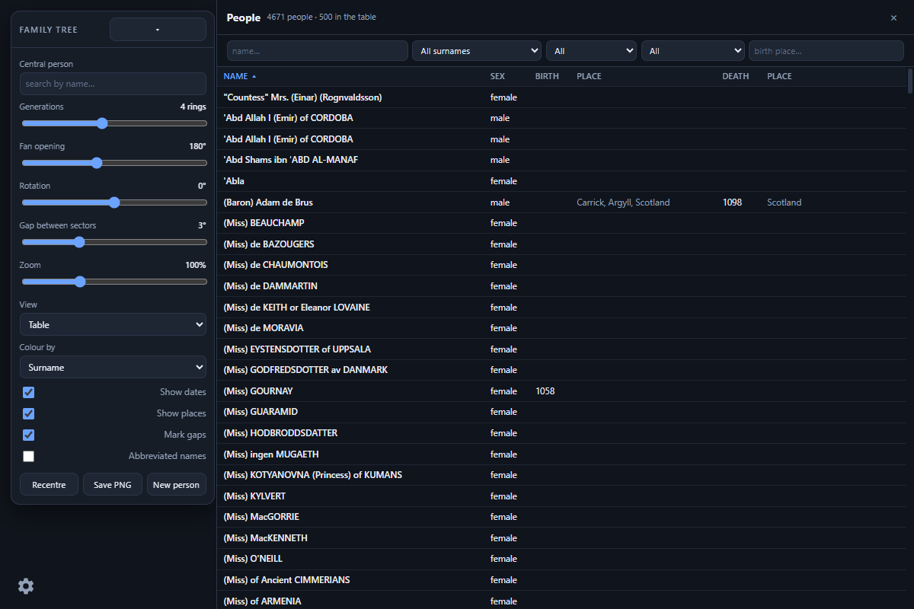

Find anyone in seconds
The table view filters by name, surname, sex, living or deceased, and birth place, with sortable columns for name, birth and death. A click opens the person in the fan chart.
- Half a million rows stay responsive — paginated and indexed.
- Surnames come from a palette so the chart colours stay consistent.